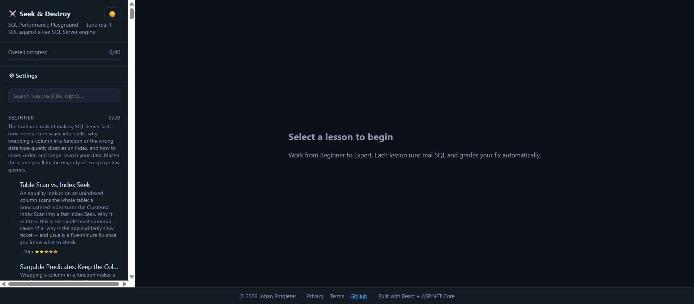

Seek & Destroy
SET STATISTICS IO ON and see for yourself.An interactive, web-based playground for developing Microsoft SQL Server performance-tuning skills — from beginner to expert. Write real T-SQL against a real SQL Server 2022 engine, see genuine execution plans, logical reads, locking and deadlocks, and get graded automatically.

Every lesson starts with a deliberately slow query. Inspect the execution plan and statistics tabs to see exactly why.
Add an index, rewrite the query, update statistics, reorder a transaction — against a live SQL Server engine, not a simulation.
The pass/fail banner shows exactly which measurable conditions you've met — no Table Scan, logical reads under a threshold, Index Seek used.